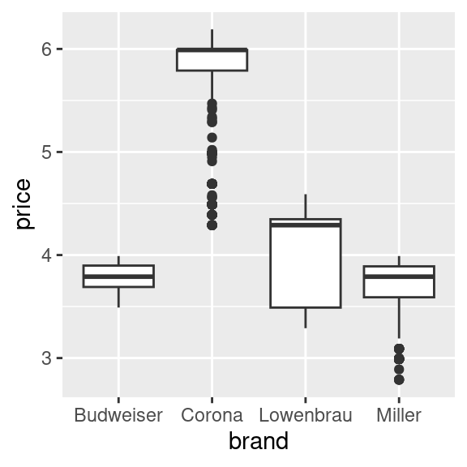
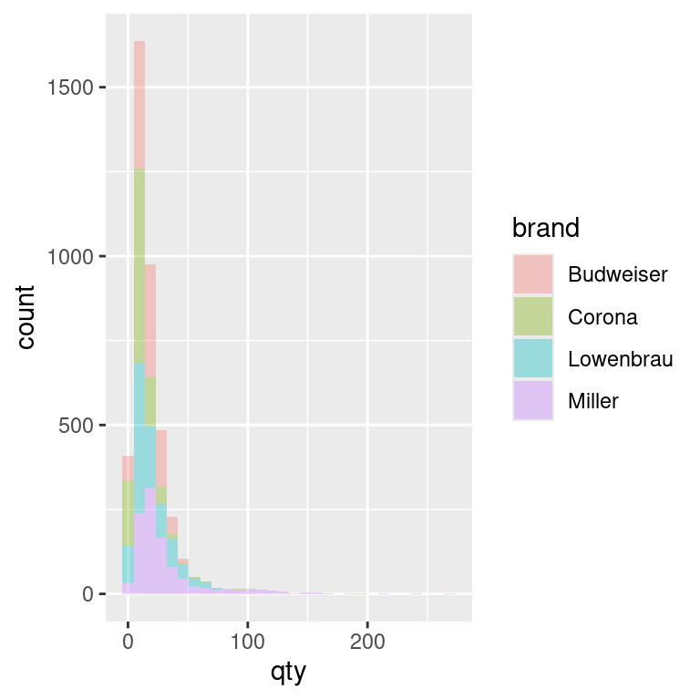
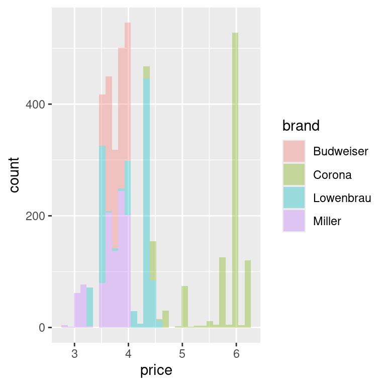
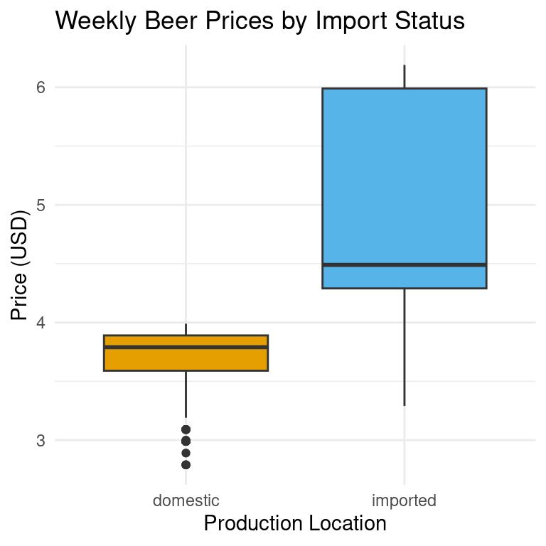

# A tibble: 10 × 6
store week brand qty price imported
<dbl> <dbl> <chr> <dbl> <dbl> <chr>
1 86 91 Budweiser 23 3.49 domestic
2 86 91 Corona 13 5.79 imported
3 86 91 Lowenbrau 13 3.99 imported
4 86 91 Miller 15 3.69 domestic
5 86 92 Budweiser 46 3.49 domestic
6 86 92 Corona 24 5.79 imported
7 86 92 Lowenbrau 21 3.99 imported
8 86 92 Miller 117 2.99 domestic
9 86 93 Budweiser 47 3.49 domestic
10 86 93 Corona 23 4.39 imported4 Data Visualisation for Business Intelligence
Learning Goals
By the end of this lecture, you should be able to:
- Explain how different visualization techniques reveal patterns in retail beer data that would be difficult to see in tables or raw numbers.
- Implement appropriate visualizations using ggplot2 to analyze relationships between beer prices, sales volumes, and product characteristics.
- Compare price elasticity patterns between domestic and imported beer brands using log-log demand curve visualizations.
4.1 Why We Begin with Data Visualisation
Data analysis starts long before you write a model, calculate a statistic or manipulate data. It starts with a question and a dataset — and the need to make sense of what you’re looking at. That’s why the first thing we cover is data visualisation.
Visualisation is how we as analysts get our bearings. Before we manipulate, summarise, or test anything, we need to see the shape of the data — how it varies, where it might surprises us, and what patterns be waiting underneath the surface. A simple graph can often tell us more in seconds than a table of numbers could in minutes.
“The greatest value of a picture is when it forces us to notice what we never expected to see.” — John Tukey
Visualisation also helps us engage with data in ways that raw numbers cannot. Our brains process visual information far faster than text—some estimates say up to 60,000× faster—which is why well-designed graphs make it easier to spot patterns, outliers, and anomalies that might otherwise go unnoticed. Visualisations can reveal hidden relationships that shape customer behavior, pricing outcomes, or operational performance.
And just as importantly, visualisation is often one of the main ways in which we communicate our work. It bridges the gap between technical analysis and business decision-making. Graphs are essential to data storytelling—they help us explain both the broad patterns and the important details. A good graph doesn’t just display data; it encodes meaning in a way that others can decode. The success of a visual depends not only on what it shows, but on how well it helps an audience understand the underlying story while simultaneously preserving its context.
Throughout this course, we’ll often begin with a business challenge, explore the data to see what patterns emerge, and then work toward communicating our findings in a way that matters—whether through a plot, a written summary, or a recommendation to decision-makers. This chapter sets the tone for that structure. We start with a real business problem. We explore it through a series of visualisations. And we practice turning what we see into insights someone else could use.
4.2 The Business Challenge
The Topic: Understanding Price Sensitivity in Beer Sales
We begin our analytics journey with a fundamental business question: How do price changes affect sales? Pricing is one of the most powerful levers in retail. Some consulting firms have made huge claims about price sensitivity in retail contexts, suggesting that a 1% increase in price can lift profits by up to 10–11%, due to the direct impact of price on profit margins. However, more recent academic research suggests that the relationship is often less dramatic and highly context-dependent, especially once you account for consumer responses and competitive dynamics. In reality, the profit impact of a price change depends on how sensitive demand is. Getting a first handle on that price sensitivity, and stylized facts around prices and quantities sold is exactly the issue we want to explore.
To explore this, we will work with data from the beer category, a $16.8 billion market in Australia. Understanding how price affects demand is critical for retailers, analysts, and category managers making everyday pricing and promotion decisions.
In this chapter, we ask:
How do price changes affect sales across different beer brands?
And more specifically:
Do imported and domestic beers respond differently to price changes?
The Data: Retail Scanner Data from Dominick’s Finer Foods
To answer this, we’ll work with real-world retail scanner data. While the data that we will use comes from a U.S. supermarket chain, it closely mirrors the kind of sales and pricing information that analysts at Woolworths, Coles, or other retailers use daily. The goal is not just to practice making plots—but to begin learning how to use data to guide commercial decisions.
To explore our pricing question, we’ll use retail scanner data from Dominick’s Finer Foods, a now-defunct U.S. supermarket chain that made its data available to researchers. The dataset captures weekly sales transactions across multiple stores and includes detailed information for each observation:
- The beer brand,
- Price per unit,
- Number of units sold,
- Whether the beer is imported or domestic,
- The store identifier,
- The week of sale, and
- Whether the product was under promotion that week
Where we’re headed
Our goal is to show how just a few lines of R code can transform raw numbers into business intelligence. We’ll start with a simple data frame—just rows and columns of weekly beer sales—and build a series of visualisations that reveal patterns you could actually use to inform pricing and category strategy.
From this:
To this: (REMARK Still need to complete the pretty-ing of plots)
`geom_smooth()` using formula = 'y ~ x'Each plot we build will add a layer of understanding: differences in price across product types, variation in sales volume, and finally a visual model of price sensitivity. By the end, we’ll have a dashboard that tells a real story about consumer behavior—and gets us closer to answering our business question.
4.3 Loading and Understanding the Data
Now that we’ve seen what’s possible with visualisation, let’s load the data and start exploring it for ourselves. We’ll work with a real-world dataset of weekly beer sales and use a handful of R packages to help us plot, organise, and format our results. To get started, we’ll load the following R packages:
library(tidyverse) # for plotting, includes ggplot
library(patchwork) # for combining multiple plots into subfigures
library(scales) # for formatting axis scales
library(ggokabeito) # color blind friendly color palette -- this course's default
Reminder: What are R packages?
In the last chapter, we introduced R packages as collections of functions, data, and documentation that extend R’s capabilities. Think of them as plug-ins that add new tools to your RStudio toolbox.
Today, we’re using a few common packages that help us visualise data, combine plots, and format labels. You only need to load them once per session using library().
After we load our packages, the first thing we do is read in our dataset. In R, this is done using a function. Think of a function is just a named action — something R knows how to do. Most functions take arguments — extra pieces of information that tell the function how to behave.
We’ll use the read_csv() function to load our beer sales data from a CSV file:
beer <- read_csv("data/beer.csv")This loads a dataset called beer from a file that contains weekly price and sales data for four brands across multiple stores. You will see that this beer object now appears in the Environment tab on the upper-right in RStudio. This means we now have a dataset stored in R that we can explore, and turn into visual insights.
üí° First look: Reading in data
This line has three key parts:
read_csv( )is the function that tells R to read a CSV file- The file path (in quotes) is the argument, telling it which file to read
- beer <- is the assignment, which stores the result into a new object called beer
When we run this line, R fetches the file and stores it as a data frame we can work with in our R environment.
The Beer Sales Dataframe
Let’s take a first look at our dataset. In R, a dataset like this is stored in a structure called a data frame — a rectangular table where each row is an observation (in this case, a product-week-store combination), and each column is a variable (like brand, price, or quantity sold).
We’ve saved this data frame as an object called beer. To inspect it, we can simply type the name:
beer# A tibble: 4,033 × 17
store week brand upc qty price sales_indicator city price_tier zone
<dbl> <dbl> <chr> <dbl> <dbl> <dbl> <lgl> <chr> <chr> <dbl>
1 86 91 Budwei… 1.82e9 23 3.49 FALSE Chic… medium 2
2 86 91 Corona 8.07e9 13 5.79 FALSE Chic… medium 2
3 86 91 Lowenb… 3.41e9 13 3.99 FALSE Chic… medium 2
4 86 91 Miller 3.41e9 15 3.69 FALSE Chic… medium 2
5 86 92 Budwei… 1.82e9 46 3.49 FALSE Chic… medium 2
6 86 92 Corona 8.07e9 24 5.79 FALSE Chic… medium 2
7 86 92 Lowenb… 3.41e9 21 3.99 FALSE Chic… medium 2
8 86 92 Miller 3.41e9 117 2.99 FALSE Chic… medium 2
9 86 93 Budwei… 1.82e9 47 3.49 FALSE Chic… medium 2
10 86 93 Corona 8.07e9 23 4.39 FALSE Chic… medium 2
# ℹ 4,023 more rows
# ℹ 7 more variables: zip <dbl>, address <chr>, latitude <dbl>,
# longtitude <dbl>, start_of_week <date>, is_holiday_week <lgl>,
# imported <chr>But that can be overwhelming if there are lots of rows and columns. Instead, we’ll use the glimpse() function. It gives us a quick overview of the structure: variable names, types, and a few sample values from each.
glimpse(beer)Rows: 4,033
Columns: 17
$ store <dbl> 86, 86, 86, 86, 86, 86, 86, 86, 86, 86, 86, 86, 86, 86…
$ week <dbl> 91, 91, 91, 91, 92, 92, 92, 92, 93, 93, 93, 93, 94, 94…
$ brand <chr> "Budweiser", "Corona", "Lowenbrau", "Miller", "Budweis…
$ upc <dbl> 1820000016, 8066095605, 3410021505, 3410000554, 182000…
$ qty <dbl> 23, 13, 13, 15, 46, 24, 21, 117, 47, 23, 34, 118, 46, …
$ price <dbl> 3.49, 5.79, 3.99, 3.69, 3.49, 5.79, 3.99, 2.99, 3.49, …
$ sales_indicator <lgl> FALSE, FALSE, FALSE, FALSE, FALSE, FALSE, FALSE, FALSE…
$ city <chr> "Chicago", "Chicago", "Chicago", "Chicago", "Chicago",…
$ price_tier <chr> "medium", "medium", "medium", "medium", "medium", "med…
$ zone <dbl> 2, 2, 2, 2, 2, 2, 2, 2, 2, 2, 2, 2, 2, 2, 2, 2, 2, 2, …
$ zip <dbl> 60618, 60618, 60618, 60618, 60618, 60618, 60618, 60618…
$ address <chr> "3350 Western Ave", "3350 Western Ave", "3350 Western …
$ latitude <dbl> 41.94235, 41.94235, 41.94235, 41.94235, 41.94235, 41.9…
$ longtitude <dbl> -87.68999, -87.68999, -87.68999, -87.68999, -87.68999,…
$ start_of_week <date> 1991-06-06, 1991-06-06, 1991-06-06, 1991-06-06, 1991-…
$ is_holiday_week <lgl> FALSE, FALSE, FALSE, FALSE, FALSE, FALSE, FALSE, FALSE…
$ imported <chr> "domestic", "imported", "imported", "domestic", "domes…Let’s break this down.
This dataset has 4,033 rows and 17 columns. Each row represents the sales of one beer brand at one store during one week. The columns tell us what was sold, where and when it was sold, and under what conditions.
Here are a few important variables to notice:
brand: the name of the beer (e.g., Budweiser, Corona)qty: how many units were sold that weekprice: the price per unitimported: whether the beer is domestic or importedweekandstart_of_week: indicators of when the sale occurredstore,city,zip, andzone: store location identifierssales_indicatorandis_holiday_week: flags for whether the product was on promotion or sold during a holiday week
We’ll mostly focus on variables like price, qty, and imported in this chapter, but it’s good to know that the data contains much more we could explore later.
5 min
- In your own words, describe what a single row in the beer dataset represents.
- What are the key variables we’ll likely focus on when exploring how price affects sales? Why those?
- Identify two other columns in the dataset that might be useful for understanding context (e.g. when or where the sale happened).
- As you look at the
glimpse()output, notice the data types in each column (e.g.<chr>,<dbl>,<lgl>,<date>). Why might it matter whether a column is stored as a number, category, or date?
Solution
What does a row represent?
- Each row shows the sales of a specific beer brand at a specific store during a specific week. It tells us how many units were sold, at what price, and includes information about the product and store.
Key variables for pricing analysis:
price: how much the product was sold for that weekqty: how many units were soldimported: whether the beer is domestic or importedbrand: which brand the sales belong to
These variables let us explore patterns in price, demand, and brand differences.
Contextual columns:
weekorstart_of_week: tells us when the sale occurredstore,zip, orcity: tells us where the sale happened
These can help us account for seasonal effects or location-based differences in consumer behavior.
Why data types matter:
- Numeric variables like price and qty can be plotted, summarised, or used in calculations
- Categorical variables like brand or imported can be used to group or color plots
- Logical (
TRUE/FALSE) variables like sales_indicator are useful for filtering - Date variables help with time-based analysis
Understanding data types helps us choose the right visualisation and transformation later.
4.4 Visualizing the Data
In this book, we’ll build most of our plots using the ggplot2 package. It follows what is know as the grammar of graphics approach, which means you build a plot in layers:
- Start with the data and aesthetic mappings (what goes on the x- and y-axis, or what defines colour)
- Add geoms (the shapes in the plot — bars, points, lines, etc.)
- Then layer in labels, scales, and themes to clarify and style the plot
Think of it like building a chart step by step, rather than picking a template.
We’ll also need a few key data visualisation principles to guide how we build our plots:
- Choose the right visual for the question you’re asking
- Don’t overload the viewer—clarity beats complexity
- Colour and scale should help highlight structure, not distract from it
Let’s dive into creating the plots!
Investigating Price Distributions
We begin by exploring how beer prices vary across products. Specifically, we’ll compare the prices of imported and domestic beers to see if there are noticeable differences — and try and infer, where possible, what those differences might tell us about the market.
We start by telling R what data we’re using. This line alone won’t produce a plot, but it sets the stage—like opening a blank canvas and choosing your dataset.
ggplot(beer)
Next, we tell ggplot what kind of plot to draw. We’ll use a geom_boxplot(), which creates a box plot—a compact way to show how a variable is distributed.
Box plots are useful when you want to:
- Compare medians and variability across groups
- Spot outliers or unusually high/low values
- See how spread out a variable is
In our case, we want to understand the distribution of beer prices, and eventually compare prices between imported and domestic products. A box plot helps us do both quickly and clearly.
ggplot(beer) +
geom_boxplot()
What is a box plot?
A box plot shows the spread of a numeric variable:
- The box captures the middle 50% of values (from the 1st to 3rd quartile)
- The line inside the box shows the median
- The “whiskers” extend to typical lower and upper values
- Any points outside the whiskers are considered outliers
This lets you compare distributions without showing every single data point.
Now we need to map a variable to an aesthetic—a visual feature like position, colour, or size. Here, we’re interested in price, so we map price to the y-axis because we want to see the distribution of prices displayed vertically.
ggplot(beer) +
geom_boxplot(aes(y = price))
This gives us a boxplot showing the overall distribution of beer prices, but it doesn’t yet separate imported from domestic products. To do this, we need to add an additional aesthetic. Because we have prices displayed vertically, we will use the horizontal dimension to show different box plots for imported and domestic beers, giving us a side-by-side comparison. Thus, we add imported as the x aesthetic:
ggplot(beer) +
geom_boxplot(aes(y = price, x = imported))
This is our first visual insight. On average, imported beers tend to have higher prices than domestic ones. The imported beers also have more variation in pricing, which we can see from the relatively longer ‘box’ part of the plot. You might notice that:
- For imported beers, the median (the horizontal line inside the box) is closer to the bottom of the box
- For domestic beers, the median is roughly centered within the box
This suggests that imported beer prices are more right-skewed—that is, most imported beers are priced closer to the lower end of their group, but there are a few higher-priced rows of data pulling the distribution upward. This could indicate a wider range of premium pricing among imported brands. In contrast, domestic beer prices are more symmetrically distributed, with prices more evenly spread above and below the median. This might reflect tighter price clustering and less variation in pricing strategy among domestic brands.
These insights makes intuitive sense: imported products often face higher shipping and distribution costs, and may be positioned as premium options in the market. Still, this is just the start—we’re observing, not yet explaining.
We’ll return to this idea later when we explore the price-quantity relationship.
5 min
- Create a box plot comparing the prices across different beer brands.
- Summarize the main insights from the graph in 3 sentences.
Solution
ggplot(beer) +
geom_boxplot(aes(y = price, x = brand))
Storing Our Plot for Later
So far, we’ve been building plots and printing them immediately either into our Quarto document or the Plot pane in RStudio. But just like with data frames or numbers, you can also store a plot to an object in R. This is helpful when you want to:
- Reuse the plot later in your script
- Add more layers or styling in a separate step
- Export the plot to a file (e.g. PNG or PDF)
Here, we assign the plot to an object called price_box:
price_box <-
ggplot(beer) +
geom_boxplot(aes(y = price, x = imported))This doesn’t display the plot yet—it just stores it. To view it, you can type the object name and press Enter:
price_boxIf we’d like to save the plot as an image file you can use outside of R (e.g. in a report or slide), use ggsave():
ggsave("price_box.png",
plot = price_box,
width = 5, height = 4
)Exploring Quantity Sold
Next, let’s look at sales volume — how many units of beer were sold each week. This can help us understand the distribution of demand across our observations and spot patterns like common purchase sizes or unusually large orders.
A histogram shows how often different values occur by grouping them into bins. It’s great for seeing the shape of a distribution — for example, whether most sales are small, or if there are frequent large sales.
Here’s a basic histogram of the quantity sold in a store-brand-week (qty):
ggplot(beer) +
geom_histogram(aes(x = qty))`stat_bin()` using `bins = 30`. Pick better value with `binwidth`.
By default, ggplot chooses a bin size for you, but adjusting the bin width can make the story clearer. A smaller bin width shows more detail, while a larger bin width smooths over small variations. Let’s experiment with the binwidth argument to see how changing it alters the level of detail in our histogram. In the code, we set binwidth = 5. This means each bar in the histogram represents a range of 5 units sold. For example, one bar might count all weeks where 1–5 units were sold, the next bar shows 6–10 units, and so on. Choosing binwidth = 5 groups the data into wider ranges, smoothing out small fluctuations and making overall patterns easier to see.
ggplot(beer) +
geom_histogram(aes(x = qty), binwidth = 5)
Alternatively, you can set the number of bins instead of the width. Both methods control how finely the data is grouped. Let’s experiment with the bins argument to see how changing it alters the level of detail in our histogram. In the code, we set bins = 40. This means the range of values for quantity sold is divided into 40 equally spaced intervals (bins), and each bar shows how many observations fall into each interval. Choosing a larger number of bins gives a more detailed view of the distribution, while a smaller number of bins smooths out fine-grained variation and shows broader trends.
ggplot(beer) +
geom_histogram(aes(x = qty), bins = 40)
üí° Recognising Right-Skewed Data
Many real-world business datasets — including retail sales — are right-skewed.
This means most observations are clustered at the lower end of the scale, with a long tail of higher values.
In our beer sales data, most weekly quantities sold are relatively small, but there are occasional large values when sales spike.
Right-skewed data can make it harder to see detail in the bulk of the distribution. Later, we’ll look at how log transformations can make these patterns easier to compare.
We can learn more by splitting the histogram into two groups: imported and domestic beers. This lets us see whether the sales volume distribution looks different for each group. We can do this by mapping the imported variable to the fill aesthetic, which tells ggplot to colour each bar in the histogram according to that variable’s value. In our case, this means domestic and imported beers will each get their own colour, so we can compare their sales distributions.
ggplot(beer) +
geom_histogram(aes(x = qty,
fill = imported
),
binwidth = 5)By splitting the histogram by import status, we can compare the sales patterns of domestic and imported beers directly. Most beers, domestic or imported, sell in small quantities most weeks. Domestic brands tend to have slightly more mid-range sales, while imports have proportionally more very-low-volume weeks. This might reflect differences in popularity, price, or store stocking patterns.
5 min
- Create histograms to visualize the distribution of quantity sold across different beer brands
- Create histograms to visualize the distribution of prices across different beer brands
Solution
ggplot(beer) +
geom_histogram(aes(x = qty, fill = brand), alpha = 0.35)`stat_bin()` using `bins = 30`. Pick better value with `binwidth`.
ggplot(beer) +
geom_histogram(aes(x = price, fill = brand), alpha = 0.35)`stat_bin()` using `bins = 30`. Pick better value with `binwidth`.
Density Plot
Histograms are great for showing how often different quantities occur, but sometimes the bars make it hard to compare two groups side-by-side. A density plot is like a smoothed histogram — it turns the bars into a curve that’s easier to compare. Instead of showing how many weeks fall into each bin, the y-axis now shows density, which stretches or shrinks the bars so that the overall shape reflects the distribution rather than the total number of observations. This means we can compare domestic and imported beers on the same scale, even if one sells far more than the other.
ggplot(beer) +
geom_density(aes(x = qty))The density plot shows the overall shape of a distribution by smoothing across values, rather than counting how many observations fall into fixed-width bins. This smoothing can make patterns easier to see—especially when comparing groups—because it removes the distraction of bin boundaries. A useful way to think of the difference between a histogram and a density is as follows: a histogram is a photo with sharp edges; a density plot is a blurred version that keeps the main shapes but smooths out the noise.
Tip: Reading a density plot
- Y-axis change: Density is not a count—it’s scaled so the area under each curve = 1.
- Peaks: High peaks = more common values.
- Spread: Wider curves = more variation in the data.
- Overlap: The more the curves overlap, the more similar the distributions.
We can now look at how the densities differ between domestic and imported beer:
ggplot(beer) +
geom_density(aes(x = qty, fill = imported))We see the same right-skewed shape as in the histograms—most sales are small in quantity. Domestic beers have a slightly broader spread into mid-range sales, while imports are more concentrated at very low quantities
Detour: Adding Style to our plots
Let’s pause and learn how to make the ones we already have easier to read and interpret. We’ve already used fill to compare groups (e.g., imported vs domestic beers), so you’ve seen how visual styling can make a difference. Styling in ggplot is about guiding the reader’s eye to the important parts of the story—it’s not just decoration. Thoughtful styling helps the reader spot patterns faster, compare values more easily, and remember the message. Every visual element—colour, background, text, scales—either supports or distracts from the story you’re telling, so the goal is to make each one work in service of your main message. In practice, we can think of styling as a set of “knobs” we can adjust to make our plot clearer, cleaner, and more effective.
Color / Fill
Use colour to encode categories or to highlight important differences you want the reader to notice quickly. In our beer example, using one colour for “imported” and another for “domestic” makes the contrast immediately clear. In ggplot, you have two main options:
fillchanges the inside colour of shapes (e.g., bars in a bar chart, the interior of a box in a boxplot, or the area under a density curve).color(spelled without the “u” in code) changes the outline or border colour of shapes, or the colour of points and lines when there is no interior to fill.
For example, a histogram or boxplot typically uses fill, while a line chart or scatterplot usually uses color. When deciding what colors to use, consistency is key: if “imported” is blue in one plot, it should be blue in every plot in the report. This avoids confusion and helps the audience build a visual memory for the categories. Also, avoid using too many colours—stick to the minimum needed to tell your story clearly.
Because colour carries meaning, it’s important to choose palettes that are readable and accessible to everyone, including people with colour vision deficiencies. This course uses the Okabe-Ito colour palette. The Okabe–Ito palette is a scientifically designed set of eight colours chosen to remain distinct for people with the most common forms of colour blindness. It’s widely recommended in scientific publishing because it makes plots more inclusive without sacrificing clarity for those with typical colour vision. By using this palette, you ensure that your plots remain interpretable to the widest possible audience without sacrificing clarity or visual appeal. To use this palette, we add a new line to our ggplot code. Let’s update our price box plot with the new color palette:
ggplot(beer) +
geom_boxplot(aes(y = price,
x = imported,
fill = imported)) +
scale_fill_okabe_ito()
About the Okabe–Ito palette
The Okabe–Ito palette (Okabe & Ito, 2002) is a scientifically designed set of eight colours selected to remain distinguishable for viewers with common forms of colour‑vision deficiency while still looking balanced for typical colour vision. The result is eight colours chosen for maximum distinguishability, even when converted to simulated colour-blind vision. Unlike many “rainbow” palettes that blend into confusion for some viewers, the Okabe–Ito set keeps categories clearly separated, reducing the risk of misinterpretation. It’s widely recommended in scientific figures because it improves inclusivity without sacrificing clarity.
Here are the colors the Okabe-Ito pallete uses:

Themes
Themes control the non-data elements of your plot: background colour, grid lines, axis text, titles, legend placement, and more. They don’t change the data itself, but they can make the plot easier—or harder—to read.
Just like colour choices, themes should help your audience focus on the key message. For example, a busy grid might distract from the pattern you want to highlight, while a clean background and minimal grid lines can make comparisons easier. Think of themes as the “dress code” for your plot—formal, casual, or somewhere in between.
In ggplot2, you can tweak themes manually with functions like theme(legend.position = "none"), or apply complete presets such as theme_minimal(), theme_classic(), or theme_bw(). Presets give you a quick starting point, and you can then layer on custom changes to suit your needs.
In this course, we’ll mostly use theme_minimal() as our default. It removes unnecessary chart junk, keeps the focus on the data, and prints cleanly for reports. It also works well when we layer additional style elements like colour palettes or custom labels.
Let’s use theme_minimal() along with the code that removes the legend in our price box plot. Note that we more often than not, the legend is useful, and turning it off is more so about showing you what we can do than that we should:
ggplot(beer) +
geom_boxplot(aes(y = price,
x = imported,
fill = imported)) +
scale_fill_okabe_ito() +
theme_minimal() +
theme(legend.position = "none")
Comparing Common
ggplot2 Themes
Here’s the same plot shown with four different ggplot2 theme presets.
Notice how each changes the background, grid lines, and overall look, without altering the data.
p <- ggplot(beer) +
geom_boxplot(aes(y = price, x = imported, fill = imported)) +
scale_fill_okabe_ito()
(
(p + theme_grey() + labs(title = "theme_grey()")) |
(p + theme_bw() + labs(title = "theme_bw()"))
) /
(
(p + theme_classic() + labs(title = "theme_classic()")) |
(p + theme_minimal() + labs(title = "theme_minimal()"))
)
Titles
A clear, concise title tells the reader what they’re looking at before they even process the axes or legend. Think of it as the “headline” for your plot—something that gives context at a glance. Avoid vague titles like Sales Data; instead, be specific: Weekly Beer Prices by Import Status.
Good titles are:
- Informative – they tell the viewer what is being shown and how it’s grouped.
- Concise – avoid long sentences or jargon.
- Consistent – if your plots are part of a series, use a consistent style and order of information.
In ggplot2, titles are usually added with the labs() function using the title argument. Let’s add a title to our box plot:
ggplot(beer) +
geom_boxplot(aes(y = price,
x = imported,
fill = imported)) +
scale_fill_okabe_ito() +
labs(
title = "Weekly Beer Prices by Import Status"
) +
theme_minimal() +
theme(legend.position = "none")You can also add a subtitle for more context and a caption to show the data source:
ggplot(beer) +
geom_boxplot(aes(y = price,
x = imported,
fill = imported)) +
scale_fill_okabe_ito() +
labs(
title = "Weekly Beer Prices by Import Status",
subtitle = "Dominicks Finer Foods Stores",
caption = "Source: Univeristy of Chicago Booth School of Business Kilt's Center for Marketing Research"
) +
theme_minimal() +
theme(legend.position = "none")::: {callout-tip title=“Function Order in ggplot2”}
In ggplot2, the order of the functions in your plot code is generally irrelevant, as long as each layer or setting has the information it needs.
For example, theme_minimal() can be placed before or after labs(), and your plot will look the same.
The exception is when a later layer overrides an earlier one—for example, adding a new theme() call after another theme() will replace some settings. :::
Axis Labels
Clear, informative axis labels make your plots easier to understand without extra explanation. A good axis label should answer: “What is being measured?” and “In what units?”
You can set axis labels using the labs() function, by specifying x = and y = arguments:
ggplot(beer) +
geom_boxplot(aes(y = price,
x = imported,
fill = imported)) +
scale_fill_okabe_ito() +
labs(
title = "Weekly Beer Prices by Import Status",
x = "Production Location",
y = "Price (USD)"
) +
theme_minimal() +
theme(legend.position = "none")
Keeping axis labels descriptive is especially important when your plot might be seen outside the context of your analysis—such as in a report or presentation slide. Instead of y = "Price", specify y = "Price (USD)". Instead of x = "Type", write x = "Beer Type". Note that the best axis label depends on the audience. For a technical audience, precise measurement units are important. For a business executive audience, shorter, cleaner labels may be better—while still avoiding jargon.
When category names on the x-axis are long (or there are many of them), the labels can overlap and become unreadable. One fix is to rotate the text so each label has its own space:
ggplot(beer) +
geom_boxplot(aes(y = price,
x = imported,
fill = imported)) +
scale_fill_okabe_ito() +
labs(
title = "Weekly Beer Prices by Import Status",
x = "Production Location",
y = "Price (USD)"
) +
theme_minimal() +
theme(legend.position = "none",
axis.text.x = element_text(angle = 45, hjust = 1)
)
Rotating to 45 degrees is often a good balance between readability and space. The hjust = 1 shifts the label’s anchor point so it lines up neatly with the tick mark.
Notice that we adjusted the rotation of the x-axis labels inside theme() rather than labs().
That’s because:
labs()is for content — it changes the text that appears (the wording of titles, subtitles, captions, and axis labels).theme()is for appearance — it controls how that text (and other plot elements) is drawn: font size, colour, position, rotation, margins, and so on.
Rotating the axis text is purely a formatting change; it doesn’t alter what the label says, only how it’s displayed. That makes it part of the plot’s theme, not its labels.
::: {callout-tip collapse=true title=“Centering the Plot Title”} In ggplot2, you center the title by setting its horizontal justification in theme(), similarly to how we modified the axis labels.
The following code centers the axis title:
ggplot(beer) +
geom_boxplot(aes(y = price,
x = imported,
fill = imported)) +
scale_fill_okabe_ito() +
labs(
title = "Weekly Beer Prices by Import Status",
x = "Production Location",
y = "Price (USD)"
) +
theme_minimal() +
theme(legend.position = "none",
axis.text.x = element_text(angle = 45, hjust = 1),
plot.title = element_text(hjust = 0.5)
)See again that we use the hjust argument in the element_text() function. hjust controls the horizontal justification of text: How it works:
- 0 = left aligned
- 0.5 = centered
- 1 = right aligned
You likely won’t remember these. That’s OK, we always search the help to to remember how to center things too! :::
Axis Scales
So far, we’ve left ggplot to decide how to break up the axes and how to display the numbers. The scale_*_*() family of functions lets you take control. You can:
- Change the break points on an axis (where the tick marks appear)
- Adjust labels (e.g., show currency, percentages, dates in a different format)
- Switch between continuous and categorical scales
For example, to show beer prices as dollars rather than plain numbers, we want to change the y axis to dollars and keep the scale as continuous:
ggplot(beer) +
geom_boxplot(aes(y = price, x = imported, fill = imported)) +
scale_y_continuous(
labels = scales::dollar
) +
scale_fill_okabe_ito() +
theme(legend.position = "none") +
labs(y = "Price", x = "Production Location") +
theme_minimal()And if we want to have the axis ticks appear every 50 cents we add a breaks argument:
ggplot(beer) +
geom_boxplot(aes(y = price, x = imported, fill = imported)) +
scale_y_continuous(
breaks = c(3, 3.5, 4, 4.5, 5, 5.5, 6),
labels = scales::dollar
) +
scale_fill_okabe_ito() +
theme(legend.position = "none") +
labs(y = "Price", x = "Production Location") +
theme_minimal()
Understanding
scale_*_*() naming
The first * refers to the axis:
- x for the x-axis
- y for the y-axis
The second * refers to the type of data on that axis:
- continuous for numeric/quantitative data
- discrete for categories (factors or character variables)
Example:
scale_x_continuous()→ Adjusts breaks/labels for a numeric x-axisscale_y_discrete()→ Adjusts breaks/labels for a categorical y-axis
Common labels helpers from the scales package
| Helper | Example Output | Use Case |
|---|---|---|
scales::dollar |
$3.50 |
Prices, money |
scales::percent |
25% |
Proportions, rates |
scales::comma |
12,345 |
Large whole numbers |
scales::number |
12.3 |
General numbers |
scales::date_format("%b %Y") |
Jan 2024 |
Dates with custom formatting |
Adjusting Transparency with alpha
When two groups overlap in a plot—such as imported and domestic beer histograms—it can be hard to see both clearly if the bars are fully opaque. The alpha argument in the aes() function controls transparency on a scale from 0 (completely transparent) to 1 (fully opaque).
A lower alpha lets overlapping areas show through, making it easier to compare groups. For example:
ggplot(beer) +
geom_histogram(
aes(x = qty, fill = imported),
position = "identity",
alpha = 0.6,
binwidth = 5
)Here, alpha = 0.6 makes each bar slightly transparent, so you can see where domestic and imported beer distributions overlap. Use alpha sparingly—too much transparency can make colours look washed out and hard to interpret. Choosing the right value of alpha for an individual plot, is is typically trial and error.
5 min
- Customize the quantity sold histogram to use the Okabe-Ito color palette and add axis labels.
- Change the plot’s theme to use
theme_minimal(). - Make any other changes to the quantity sold histogram that you think improve it. Store the result as
sales_plot - Make any final changes to the price box plot you that think improve it. Store the results as ``
Solution
sales_plot <-
ggplot(beer) +
geom_density(aes(x = qty, fill = imported),
alpha = 0.35
) +
scale_fill_okabe_ito() +
theme_minimal()
sales_plotprice_plot <- ggplot(beer) +
geom_boxplot(aes(y = price, x = imported, fill = imported)) +
scale_y_continuous(
breaks = c(3, 3.5, 4, 4.5, 5, 5.5, 6),
labels = scales::dollar
) +
scale_fill_okabe_ito() +
theme(legend.position = "none") +
labs(y = "Price", x = "Production Location") +
theme_minimal()Price–Quantity Relationship
Up to this point, we’ve explored individual variables—examining price distributions, sales quantities, and ways to style plots for clarity. The next step is to combine two variables to see how they relate. In economics, a “demand curve” usually means a theoretical relationship showing how quantity demanded changes if all other factors stay constant. What we’ll create here looks similar, but it’s simply the relationship between price and sales in our beer data. It’s not a controlled experiment, so other factors—like brand popularity, promotions, or season—may also influence what we see. Even so, plotting price against quantity sold can highlight patterns worth investigating further.
To visualise how two continuous variables—like price and quantity—relate, we can use a scatter plot. In ggplot, scatter plots are made with geom_point(), where each point represents one observation in the data. By mapping qty to the x-axis and price to the y-axis, we put sales volume and price on the same plot, allowing us to see whether higher prices are associated with lower sales (or vice versa):
ggplot(beer) +
geom_point(aes(y = price,
x = qty)
)Lots of points land on top of each other. We can use what we know about adding transparency (alpha) to to make overlapping points easier to distinguish, revealing where observations are densely or sparsely clustered. We’ll also separate out imported and domestic beer brands using the color option:
ggplot(beer) +
geom_point(aes(y = price,
x = qty,
color = imported),
alpha = 0.25
) +
scale_color_okabe_ito()Not every raw data plot will look neat and tidy—and that’s okay. At this stage, our goal was to see the relationship, not to produce a perfect chart. But sometimes, the way data are spread out can make patterns hard to spot.
One common trick when working with sales and prices is to use a log–log plot—that is, to take the logarithm of both variables before plotting. Why bother? Because in most sales datasets, quantities can range from just a handful of units to hundreds or even thousands, and prices can also differ a lot between products. When we plot these values on their original scales, most of the data ends up squashed into a small section of the graph, with the rest of the space dominated by a few extreme points.
Taking the logarithm of both variables helps solve this problem in two ways. First, it spreads out smaller values, so we can see differences between low-volume products more clearly. Second, it compresses very large values, so they don’t overwhelm the plot. The result is a clearer view of the overall relationship between price and quantity.
There’s also a neat interpretation benefit: in a log–log plot, straight-line patterns often suggest a constant percentage relationship between the two variables. In business terms, this means we can start thinking about price elasticity—how a percentage change in price might be associated with a percentage change in quantity sold. That makes log–log plots a handy first step toward connecting our visual analysis with economic reasoning.
When we apply the logarithm directly inside the plot code — log(price) for the y-axis and log(qty) for the x-axis — we’re transforming the data on the fly. This means we don’t have to create new columns in our dataset just to see the log–log relationship. T he scatter plot now shows each product’s weekly sales and price on a scale where equal distances represent equal percentage changes:
ggplot(beer) +
geom_point(aes(y = log(price),
x = log(qty),
color = imported),
alpha = 0.25
) +
scale_color_okabe_ito()Notice how the points are now more evenly spread across the plot area. Low-quantity, low-price products no longer bunch up in one corner, and the influence of extreme values is reduced. This makes it much easier to spot patterns in the data—like whether higher prices tend to be associated with lower quantities sold—and to start thinking about how strong that relationship might be.
Another way to create a log–log plot is to leave the original variables in the data and let ggplot handle the transformation through the scale functions. Instead of wrapping log() around price and qty inside aes(), we can use scale_x_continuous(trans = "log") and scale_y_continuous(trans = "log"). This means we are applying a logarithmic transformation to the axes.
ggplot(beer) +
geom_point(aes(y = price,
x = qty,
color = imported),
alpha = 0.25
) +
scale_color_okabe_ito() +
# Natural log scale for x-axis with meaningful breaks
scale_x_continuous(
trans = "log",
breaks = c(1, 2, 5, 10, 20, 50, 100, 200)
) +
# Natural log scale for y-axis with meaningful breaks
scale_y_continuous(
trans = "log",
breaks = c(3, 4, 5, 6),
labels = scales::dollar
) +
labs(x = "Quantity", y = "Price")This approach has two big advantages:
- Cleaner code – you keep the plotting aesthetics simple while still getting the transformation you want.
- More control over axis appearance – you can set breaks and labels that are easy to interpret, even when using a logarithmic scale.
In the example below, we specify meaningful breaks for both axes—like quantities of 1, 2, 5, 10, and so on—so the reader doesn’t have to mentally decode what each tick mark means. We also keep the price axis in dollar format, even though it’s on a log scale, which helps connect the plot back to the real-world numbers.
Creating Subplots with facet_wrap()
Sometimes, we want to compare the same relationship across different categories — without cramming everything into a single plot. In our beer data, suppose we want to see whether the price–quantity pattern differs between domestic and imported beer. One way is to make a separate plot for each type… but that’s tedious. Instead, ggplot2 lets us split one plot into small multiples — called facets — so each category gets its own panel but shares the same scales. This can make comparisons much easier. Here’s the code that does this:
ggplot(beer) +
geom_point(aes(y = price, x = qty,
color = imported),
alpha = 0.25
) +
facet_wrap(~ imported) +
# Natural log scale for x-axis with meaningful breaks
scale_x_continuous(
trans = "log",
breaks = c(1, 2, 5, 10, 20, 50, 100, 200)
) +
# Natural log scale for y-axis with meaningful breaks
scale_y_continuous(
trans = "log",
breaks = c(3, 4, 5, 6),
labels = scales::dollar
) +
labs(x = "Quantity", y = "Price") +
scale_color_okabe_ito() +
theme_minimal() +
theme(legend.position = "none")The facet_wrap(~ type) line tells ggplot:
~ type→ make a panel for each value of the type variable- Share the same x- and y-axes so differences in shape are easy to see
When we separate imported and domestic beers, differences in how quantity responds to price become clearer. If the imported beer points drop away more steeply as price rises, it suggests imported beers are more price-sensitive—customers cut back faster when prices go up. Faceting this way makes these patterns easier to see for each group, helping us spot where pricing changes might have a bigger impact on sales.
Adding a Statistical Transformation
When you build plots with ggplot, you’re really stacking layers: a data layer, one (or more) geometry layers (points, boxes, lines), plus optional styling layers (scales, themes, labels). Up to now we’ve used one geom in each plot. Now we’ll add another layer: a smooth trend line that helps the eye see the overall relationship between price and quantity.
Adding a smoothing layer can make patterns in your data much easier to see. A fitted line condenses the overall direction—whether it’s upward, downward, or flat—into a single visual cue, even when the raw data is noisy. When combined with faceting or colour grouping (such as imported vs domestic beers), separate lines make it easier to compare slopes and spot differences between categories. On a log–log plot, a straight fitted line suggests a roughly constant percentage relationship between the two variables, which is a useful way to think about price sensitivity.
Here’s what we’ll add: we’ll keep the scatter points so the raw data remains visible, but layer on a smoothed line to highlight the main pattern in the data. This line will be drawn using a statistical transformation—such as a simple linear model—so it captures the overall relationship. Together, they tell both the detail and the trend stories on one figure. We choose a linear model because it is a simple, disciplined way of drawing the straight line that best describes the overall relationship between the two variables. We can include a shaded confidence band to show the uncertainty around the fit, or turn it off for a cleaner look. We’ll also be sure that the line’s colour will be distinct but subtle, so it complements the points without overwhelming them.
ggplot(beer) +
geom_point(aes(y = price, x = qty,
color = imported),
alpha = 0.25
) +
# This is the addition of the linear model
geom_smooth(aes(y = price, x = qty),
method = "lm",
# add a complementary okabe_ito color
color = palette_okabe_ito()[7],
se = TRUE) +
facet_wrap(~ imported) +
# Natural log scale for x-axis with meaningful breaks
scale_x_continuous(
trans = "log",
breaks = c(1, 2, 5, 10, 20, 50, 100, 200)
) +
# Natural log scale for y-axis with meaningful breaks
scale_y_continuous(
trans = "log",
breaks = c(3, 4, 5, 6),
labels = scales::dollar
) +
labs(x = "Quantity", y = "Price") +
scale_color_okabe_ito() +
theme_minimal() +
theme(legend.position = "none")`geom_smooth()` using formula = 'y ~ x'
geom_smooth() lets us add a fitted line on top of our scatter plot. By setting method = "lm", we’re asking ggplot to draw a straight line based on a simple linear model. The aes(y = price, x = qty) tells ggplot which variables to use—here, the same ones as our points. We’ve picked a contrasting colour from the Okabe–Ito palette (palette_okabe_ito()[7]) so the line is easy to spot without overpowering the data. With se = TRUE, ggplot shades in a confidence band around the line, giving us a quick visual sense of how certain (or uncertain) that fitted relationship is.
Caution on interpretation
This fitted line shows association, not causation. In our retail data, promotions, seasons, and brand effects can also influence the pattern. Treat the line as a visual guide, not proof of a causal “demand curve.”
Avoid repeating yourself
Notice we wrote aes() twice—once for the points and again for the smoothing line.
If you plan to use the same aesthetics across multiple layers, you can put them inside the initial ggplot() call.
That way, every geom_ layer inherits them automatically, keeping your code cleaner and easier to read.
Here’s how we reduce the duplication in the use of aes():
ggplot(beer,
aes(y = price, x = qty)
) +
geom_point(aes(color = imported),
alpha = 0.25
) +
# This is the addition of the linear model
geom_smooth(method = "lm",
# add a complementary okabe_ito color
color = palette_okabe_ito()[7],
se = TRUE) +
facet_wrap(~ imported) +
# Natural log scale for x-axis with meaningful breaks
scale_x_continuous(
trans = "log",
breaks = c(1, 2, 5, 10, 20, 50, 100, 200)
) +
# Natural log scale for y-axis with meaningful breaks
scale_y_continuous(
trans = "log",
breaks = c(3, 4, 5, 6),
labels = scales::dollar
) +
labs(x = "Quantity", y = "Price") +
scale_color_okabe_ito() +
theme_minimal() +
theme(legend.position = "none")`geom_smooth()` using formula = 'y ~ x'5 min
- Modify the plot above to create separate subplots for brands rather than import status.
- Modify the plot so that there are separate colors and linear models per brand, but the facets are by import statis.
Solution
ggplot(beer,
aes(y = price, x = qty)
) +
geom_point(aes(color = brand),
alpha = 0.25
) +
# This is the addition of the linear model
geom_smooth(method = "lm",
# add a complementary okabe_ito color
color = palette_okabe_ito()[7],
se = TRUE) +
facet_wrap(~ brand) +
# Natural log scale for x-axis with meaningful breaks
scale_x_continuous(
trans = "log",
breaks = c(1, 2, 5, 10, 20, 50, 100, 200)
) +
# Natural log scale for y-axis with meaningful breaks
scale_y_continuous(
trans = "log",
breaks = c(3, 4, 5, 6),
labels = scales::dollar
) +
labs(x = "Quantity", y = "Price") +
scale_color_okabe_ito() +
theme_minimal() +
theme(legend.position = "none")`geom_smooth()` using formula = 'y ~ x'4.5 Bringing it all together: Sharing Our Results
Our Three Plots
Here is the code for the three plots we have produced so far. We store each of these as their own R objects.
- Price Box Plot
price_plot <-
ggplot(beer) +
geom_boxplot(aes(y = price, x = imported, fill = imported)) +
scale_y_continuous(
breaks = c(3, 3.5, 4, 4.5, 5, 5.5, 6),
labels = scales::dollar
) +
scale_fill_okabe_ito() +
theme(legend.position = "none") +
labs(y = "Price", x = "Production Location") +
theme_minimal()+
theme(legend.position = "none")- The Quantity Sold Density
sales_plot <-
ggplot(beer) +
geom_density(aes(x = qty, fill = imported),
alpha = 0.35
) +
# Natural log scale for x-axis with meaningful breaks
scale_x_continuous(
trans = "log",
breaks = c(1, 2, 5, 10, 20, 50, 100, 200)
) +
labs(y = "Density", x = "Quantity Sold") +
scale_fill_okabe_ito() +
theme_minimal() - The Price-Quantity Relationship
price_qty <-
ggplot(beer,
aes(y = price, x = qty)
) +
geom_point(aes(color = imported),
alpha = 0.25
) +
# This is the addition of the linear model
geom_smooth(method = "lm",
# add a complementary okabe_ito color
color = palette_okabe_ito()[7],
se = TRUE) +
facet_wrap(~ imported) +
# Natural log scale for x-axis with meaningful breaks
scale_x_continuous(
trans = "log",
breaks = c(1, 2, 5, 10, 20, 50, 100, 200)
) +
# Natural log scale for y-axis with meaningful breaks
scale_y_continuous(
trans = "log",
breaks = c(3, 4, 5, 6),
labels = scales::dollar
) +
labs(x = "Quantity", y = "Price") +
scale_color_okabe_ito() +
theme_minimal() +
theme(legend.position = "none")We’ve now built several plots—each showing a different angle on the same sales and pricing story. But in a real analysis (or a business meeting), you often want to put those views side by side so the audience can compare them at a glance. Instead of juggling separate images, we can combine them into one display. The patchwork package makes this easy, letting us “add” plots together with simple operators so related visuals live in the same frame. This way, we can present a complete picture without scrolling, flipping slides, or asking the reader to mentally stitch things together.
Let’s start with the simplest layout: putting all our plots in a single row. With patchwork, this is as easy as using the | operator between plot objects. Think of | as saying “put this next to that.”
price_qty | price_plot | sales_plot`geom_smooth()` using formula = 'y ~ x'
This tells R to take price_qty, place it on the left, then price_plot next to it, then sales_plot on the right. The result is one combined graphic where each plot keeps its own style, scales, and labels—but they’re visually aligned. However, the plots are cramped together to fit along one row. We might instead want to arrange our plots into multiple rows to make them easier to read. For example, we can put the price_qty plot on the top row, and then the price_plot and sales_plot on the second:
price_qty /
(price_plot | sales_plot)`geom_smooth()` using formula = 'y ~ x'In this layout, we’re mixing rows and columns. The / operator tells patchwork to stack things vertically—so here, price_qty (our first plot) goes on the top row. The parentheses group price_plot | sales_plot together, placing them side-by-side on the second row. Think of it like building with LEGO: / makes a new row, | fills that row with plots, and parentheses let you bundle pieces together before stacking. This way, we can create more complex, story-driven layouts while still keeping the code easy to read.
5 min
Write 3-4 sentence summary of the main takeaways from the visualization that you could send to a category manager
10 min
- Construct a similar plot to the one we’ve constructed above, but separate the plots by brand rather than import status.
- Write 3-4 sentence summary of the main takeaways from the visualization that you could send to a category manager
4.6 Always visualize the data!
Before we wrap up our work with ggplot, it’s worth pausing to remember why we spend so much time visualising data in the first place. Summary statistics like the mean and standard deviation are useful, but they can hide important patterns, relationships, and even strange quirks in the data. Two datasets can have the exact same averages and spreads yet tell completely different stories when you actually plot them. A famous—and fun—example of this is known as the Datasaurus Dozen, which shows how relying on numbers alone can be misleading. Let’s first load the datasets which are stored in an R package:
library(datasauRus)
dino_doz <- datasaurus_dozenNow we looks at the summary statistics for each data set. In particular we compare the mean and standard deviations:
| Dataset | x mean | x sd | y mean | y sd |
|---|---|---|---|---|
| dino | 54.3 | 16.8 | 47.8 | 26.9 |
| away | 54.3 | 16.8 | 47.8 | 26.9 |
| h_lines | 54.3 | 16.8 | 47.8 | 26.9 |
| v_lines | 54.3 | 16.8 | 47.8 | 26.9 |
| x_shape | 54.3 | 16.8 | 47.8 | 26.9 |
| star | 54.3 | 16.8 | 47.8 | 26.9 |
| high_lines | 54.3 | 16.8 | 47.8 | 26.9 |
| dots | 54.3 | 16.8 | 47.8 | 26.9 |
| circle | 54.3 | 16.8 | 47.8 | 26.9 |
| bullseye | 54.3 | 16.8 | 47.8 | 26.9 |
| slant_up | 54.3 | 16.8 | 47.8 | 26.9 |
| slant_down | 54.3 | 16.8 | 47.8 | 26.9 |
| wide_lines | 54.3 | 16.8 | 47.8 | 26.9 |
Summary statistics are identical for all datasets. But when we plot them, we see there are very different patterns in each dataset:
ggplot(dino_doz,
aes(x = x,
y = y)) +
geom_point() +
facet_wrap(~dataset, ncol = 3)Without visualising the data, we likely would have missed these very different patterns!
4.7 Conclusion
We’ve covered a lot of ground in this chapter, but it all comes back to two main ideas. First, the process of building a ggplot is consistent no matter what you’re visualising:
- Initialize the plot with
ggplot()– set your dataset and define the aesthetic mappings (aes()). - Add geometric layers (
geom_*) – choose the right geometry for the data and question at hand. - Customize the appearance – adjust labels, themes, colours, and axes so the plot tells its story clearly.
- (Optionally) Add statistical transformations to make the main insight easier to spot.
Second, we paired each plot with one principle of effective data visualisation:
- Price boxplot: Choose visualisations that match your question.
- Histograms & Density plots: Colour enhances categorical comparisons.
- Price-Quantity Relationship: Transformations (like log scales) can reveal patterns.
When you combine a clear plotting process with purposeful design choices, you get more than just nice-looking charts—you get business intelligence. This is one simple yet powerful example of how we turn raw numbers into stories that reveal patterns, answer questions, and guide decisions.
The Analytics Workflow (Revisited)
Recall our Analytics workflow from Chapter 2. Here’s how we used that in our data visualization journey.
Define the Business Question
→ How does price affect sales? Are imported beers different?
Acquire and Prepare Data
→ We used real retail scanner data with brand, price, and sales volume.
Explore and Visualise Patterns
→ Through box plots, density plots, and log–log scatterplots.
Analyze and Interpret Findings
→ Noting price dispersion, skewed demand, and elasticity differences.
Communicate Insights and Recommendations
→ Using clear visuals that a category manager could act on.
Beyond the Geoms We Covered
We’ve only scratched the surface of what ggplot2 can do.
There are dozens of other geoms each suited to different types of data and questions.
Before you create a plot, think about what visual form best matches your data and your audience’s needs.
You can browse the full list (with examples) in the official ggplot2 reference.